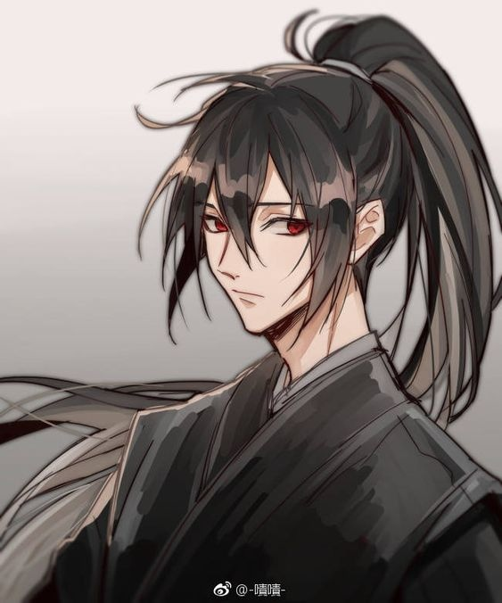
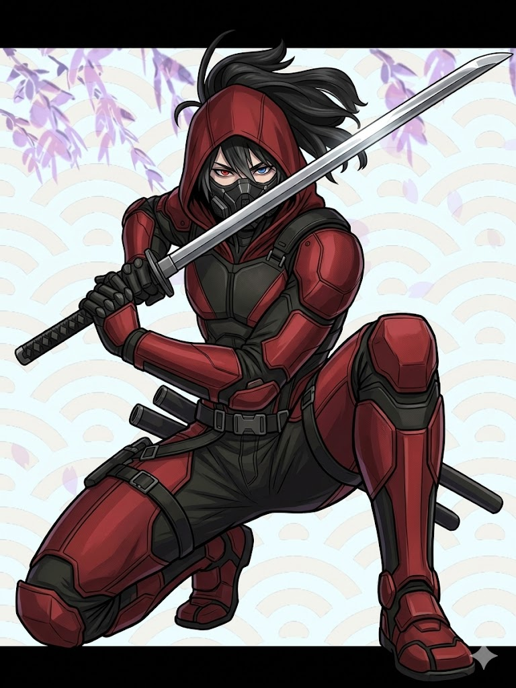
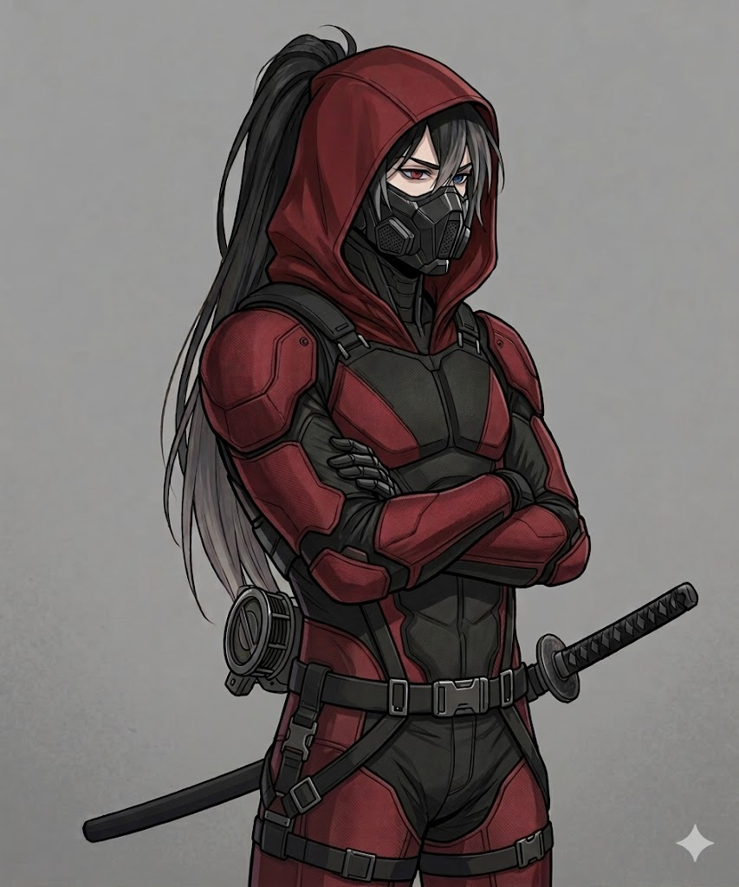

СД
«В мире, где Демоны и Боги живут вместе с Людьми, очень скоро начнётся война, за истинную силу силу»
Декстер, более известный в мультивселенной под кодовым именем СД (Дельта) — древний высший демон, первый Сын Смерти и первый истинный жнец в истории мироздания. Пережив бесчисленные эпохи, Великую Райскую Войну, сложное ментальное заточение в разуме смертных и даже собственное полное физическое уничтожение, он сумел силой воли вырваться из адской ямы, заново собрав себя по крупицам.
Оставив в прошлом официальную службу своей матери Талии, СД провозгласил себя абсолютно независимым вселенским Судьей. Вооруженный мистической катаной, сокрушительной магией темной материи и непреклонным моральным кодексом, он безжалостно карает виновных, оставаясь при этом надежным щитом для невинных душ. В настоящее время он ведет жизнь умиротворенного отшельника вместе с Код Дримур и выступает негласным хранителем божественных знаний.
Содержание
История
ЭПОХА СОЗДАНИЯ И ДРЕВНИЕ СКИТАНИЯ
История СД (Дельты) берет свое начало в неизмеримой древности, сразу после завершения Первой Войны Богов, задолго до того, как в мультивселенной появились первые Магические Маски. Когда богиня смерти Талия сокрушила и изолировала высокомерного Бога Теней Нулла, баланс сил потребовал новых исполнителей первородной воли. Именно тогда на свет явился СД, став вторым сыном Смерти и самым первым истинным демоном-жнецом в истории мироздания.
В те далекие времена СД обладал колоссальной, чистой силой и еще не нуждался в смене человеческих тел — он постоянно пребывал в своей подлинной, величественной демонической форме. Его существование было разделено между двумя обителями: официально он подчинялся матери и жил в глубинах Ада, но его бунтарский дух и любопытство часто заставляли его «тусоваться» в Раю среди других высших сущностей и создателей, таких как Марта и Рохан.
С развитием человеческой цивилизации СД начал регулярно спускаться на Землю. Его грозный силуэт оставил неизгладимый след в мифологии смертных, причем разные культуры видели в нем совершенно разные воплощения рока. В Древней Греции его шепотом нарекли «Демоном мести», в раздираемой междоусобицами феодальной Японии он стал известен как безжалостный бродячий скиталец и «Демон войны», истребляющий чудовищ, а в суровых германских землях его знали как ночного «Демона луны».
Тогда же среди людей распространился ритуал его призыва, бывший одновременно простым и зловещим: человеку требовалось намотать на палец нить, окропленную собственной кровью, и зачитать тайное заклинание. Душа смертного временно сливалась с сущностью СД, делая призывателя абсолютно непобедимым в бою. Однако за эту силу всегда приходилось платить высокую цену.
Два важнейших исторических события навсегда изменили вектор его судьбы:
- Рождение Бога Кошмаров: Забрев в уединенную германскую деревню, СД наткнулся на фанатичных и жестоких последователей Бога Знаний Рохана. Эти сектанты загнали в глухой угол обычного смертного парня по имени Рем — родного брата могущественной ведьмы Оливии Райс. Когда обезумевшие монахи попытались убить юношу, в нем проснулась разрушительная скрытая магия, и Рем начал без разбора кромсать и разрывать жителей деревни. Видя, что обезумевший смертный уничтожает невинных фермеров, СД вмешался и невероятно легко, одним мощным ударом оборвал жизнь парня. Но божественный резонанс сработал необратимо: смерть от рук Сына Смерти превратила Рема в Высшего Бога Кошмаров — Ремора. В тот момент СД даже не понял, что породил новое божество, осознав это лишь века спустя в мире людей.
- Спасение Небесных Посланников: Когда боги сотворили первых Архангелов — Габриэля и его брата Эцио, те сразу отправились на Землю искать ответы на вопросы о мироздании. Но ангелы были слишком юны и неопытны. В одной из деревень они столкнулись с загадочной беловолосой Франческой — могущественным Фактором, которая похищала детей ради жестоких ритуалов под лозунгом создания «лучших версий людей». Франческа ментально атаковала архангелов, подчиняя их разум и ломая волю. Когда Габриэль попытался дать отпор, одурманенная местная женщина ударила его топором, намертво раздробив кости ангельской руки. Франческа уже праздновала победу и собиралась присвоить магическую книгу Габриэля, но из теней насвистывая мелодию вышел СД. Сбросив черную мантию, он хладнокровно предупредил Фактора о недопустимости таких оккультных игр и мгновенным, молниеносным приемом «Дэш» пронзил своей огромной косой ее физическую оболочку. С помощью своих красных энергетических нитей СД отобрал книгу, открыл портал в Рай и буквально вытолкнул туда раненых ангелов, спасши им жизни.
Несмотря на колоссальное могущество, в конце XX века СД, истощенный веками земных битв, столкнулся с элитным отрядом спецназа под командованием Ричарда Райса (отца Джерри). В ходе тяжелого боя демон был убит и затачен под строжайшую магическую стражу в застенках секретных лабораторий.
ПАДЕНИЕ РАЯ И ЗЕМНЫЕ СКИТАНИЯ
Мирное существование высших сфер подошло к концу, когда в Раю вспыхнуло масштабное и кровавое восстание Агаты. Это событие, вошедшее в историю как Великая Райская Война, заставило СД вновь обнажить свое оружие. На поле брани Сын Смерти продемонстрировал поистине ужасающую мощь, в одиночку сражаясь против Первого Ангела, которая на тот момент уже владела частью мистических Масок.
В разгар этой бойни на СД вероломно напала Хельга, стремившаяся доказать свое превосходство и захватить власть над Адом. Однако СД оказался на голову сильнее: в яростной и короткой схватке он безжалостно оборвал ее жизнь, временно устранив угрозу. Война закончилась трагически — чтобы спасти вселенную от аннигиляции, высшие боги заперли Агату во тьме, а сами добровольно заточили себя в магические Маски, из-за чего Рай фактически перестал существовать в прежнем виде.
Оказавшись отрезанным от родных миров и лишившись поддержки матери, СД падал сквозь измерения, пока не рухнул на Землю. С этого момента он официально перестал выполнять обязанности Жнеца Смерти. Потерянный, лишенный прежнего статуса, он превратился в вечного странника, одержимого лишь одной целью — найти способ вернуть прежний дом и восстановить разрушенный порядок.
Именно в этот мрачный период земного изгнания СД начал регулярно менять человеческие тела-оболочки, словно перчатки. Его сущность кочевала из одного смертного сосуда в другой, так как ни одно человеческое тело не способно долго выдерживать колоссальное и разрушительное давление энергии высшего демона.
ПРОЕКТ «РС» И КОММУНАЛКА В РАЗУМЕ
Новая глава в истории СД началась с роковой ошибки безумного технократа Эдриана Морна. Действуя в рамках секретной сделки с пророчицей Оливией Райс, глава корпорации Adrian Corp пытался провести ритуал по призыву Бога Кошмаров Ремора, рассчитывая получить идеальное живое оружие. Но Эдриан полностью уверовал в безупречность своего плана и не учел, что ментальная связь похищенного им семилетнего Джерри Райса с пантеоном богов была слишком слабой.
Ритуал заглог, а запущенный Эдрианом параллельный эксперимент по разделению сознания вызвал мощнейший ментальный взрыв. Вместо послушной марионетки в глубинах разума испуганного мальчика пробудился дремавший в заточении древний Сын Смерти. Увидев колоссальные всплески разрушительной темной материи, Эдриан слепо поверил в свой успех и решил, что перед ним и есть Проект «РС» (Крис).
Разум Джерри Райса превратился в настоящую ментальную «коммуналку». Сначала в теле сосуществовали только Джерри и СД, причем демон регулярно перехватывал управление, заставляя парня совершать пугающие вещи. Но позже к ним присоединилось сознание падшего архангела Габриэля, лишившегося крыльев. Три абсолютно разные, мощнейшие сущности — травмированный человек, высший демон и бывший Голос Богов — были заперты в одной клетке, отчаянно борясь за контроль и пытаясь найти хоть какую-то ментальную связь, чтобы не сойти с ума.
Со временем СД принял решение саботировать приказы Эдриана. Находясь под личиной РС, он лишь делал вид, что выполняет задачи корпорации, но на самом деле тайно помогал Джерри копить силы и искать лазейки. В конечном итоге именно СД организовал и обеспечил успешный побег Джерри из клиники «Ad-Asylum».
Вскоре после побега ментальные узы разорвались: СД первым отделился от общей системы сознания, получив собственное, независимое физическое тело. Чуть позже свой отдельный облик обрел и Габриэль. Оказавшись на свободе, СД познакомился с Код Дримур, которая прониклась к нему сочувствием, стала его верным опекуном и названой сестрой.
Однако покой длился недолго. В наступившем 2021 «Году Безумия» на волю вырвался оригинальный Проект РС (Крис), контроль над которым перехватил зловещий Ньюв — альтернативная и темная версия Глюка. В жестоком, разрушительном столкновении СД потерпел сокрушительное поражение. Ньюв не просто победил демона, но и нанес его душе тяжелейшие раны, критически ослабив его силы на долгое время вперед.
ВОЗВРАЩЕНИЕ ХЕЛЬГИ, ВОЙНА ЗА МАСКИ И АДСКАЯ ЯМА
Спустя время в мир вернулась жаждущая реванша Хельга. Ее появление ознаменовалось трагедией — она жестоко убила демона Роба. Узнав об этом, СД мгновенно прервал свое затишье. Сын Смерти перехватил инициативу и в яростном, бескомпромиссном сражении наголову разгромил Хельгу и подчиненные ей легионы, жестко поставив заносчивую дочь Смерти на ее законное место.
Но настоящая катастрофа разразилась во время Войны за Маски, которую спровоцировала сошедшая с ума Дженнифер Райс, примерившая на себя обличие нового, куда более опасного РС. В ходе этой тотальной войны Дженнифер лично атаковала СД. Ослабленный прошлыми ранами демон не сумел сдержать натиск безумной полубогини и был убит.
Его мать, богиня Талия, сохраняла полное хладнокровие и никак не вмешалась в происходящее. Однако СД по своей уникальной первородной природе просто не мог окончательно исчезнуть. Его душа рухнула на самое дно позорной, темной адской ямы. Когда он очнулся, он обнаружил себя в ужасающем состоянии: у него полностью отсутствовали руки, ноги, глаза, уши, нос, лицо, позвоночник, внутренние органы и даже память о собственном имени.
СД фактически превратился в бесформенный, страдающий кусок живой тьмы. Но его железная воля заставила его бороться. Когда на него попытался напасть низкосортный адский паразит, СД сумел задушить его остатками сил и поглотил его энергию, за счет чего буквально вырастил себе первую ногу. Убив второго демона, он вернул вторую конечность. Так начался его долгий, страшный и окровавленный путь наверх. СД методично выследил и уничтожил 10 из 12 сильнейших демонов преисподней, силой отбирая у них органы и части тел. Этот адский опыт не просто восстановил его, но и сделал СД кратно сильнее, чем он был до своей гибели от рук Дженнифер.
НАСТОЯЩЕЕ ВРЕМЯ: СУДЬЯ И ХРАНИТЕЛЬ
Пройдя через все круги персонального ада, СД принял окончательное решение навсегда оставить службу в качестве Жнеца Смерти и порвал все официальные связи с матерью. Тем не менее, он не отказался от своих убеждений. Сегодня он выступает в роли абсолютно независимого, грозного вселенского Судьи и защитника простых людей от глобальных магических бедствий.
Его личный моральный компас непреклонен: СД вершит суровый самосуд исключительно над теми, чья вина полностью доказана его способностью видеть оболочки душ. Он физически не способен причинить вред невинному человеку, а его острый язык и феноменальное знание психологии позволяют ему ломать врагов как ментально, так и физически (он знает более 30 способов сломать человеческую руку голыми руками).
В настоящее время СД полностью социализировался и нашел свой долгожданный покой. Вместе со своей возлюбленной Код Дримур он перебрался в АУ SwapVerse. Они обосновались глубоко в уединенном японском лесу, где СД ведет умиротворенную жизнь благородного отшельника — он самостоятельно рубит дрова, охотится, тренирует тело и много читает, созерцая окружающую природу.
Вместо утраченных в адской яме глаз СД носит невероятно красивые, искусно вырезанные деревянные фальш-глаза, а его неизменным нарядом стало традиционное японское кимоно крови. Он мастерски управляет АТ-полями (темной материей) без использования каких-либо масок, создавая непробиваемые щиты, порталы и взрывающиеся клинки.
Недавно старый друг Габриэль обратился к СД с конфиденциальной и крайне важной просьбой. Сейн Смерти согласился прервать свое уединение ради благого дела: теперь он официально взял под свою негласную защиту священную Книгу Знаний Рохана и стал личным, самым надежным телохранителем молодого архангела Эцио, гарантируя, что к юноше больше ни одна земная или демоническая тварь не сможет подобраться и на шаг.
Личность и характер
Характер Декстера (СД) — это уникальный сплав прагматизма древней сущности и глубокого, осознанного гуманизма. Пережив бесчисленное множество эпох, предательств и даже полное физическое уничтожение, он не растерял способность сопереживать живым существам. Он обладает удивительным ментальным свойством: СД способен невероятно быстро обучаться абсолютно любым навыкам, будь то сложные физические дисциплины, тонкости человеческой психологии или новые виды магии.
СД — признанный стратег с холодным умом, способный просчитывать развитие событий на много шагов вперед. Он никогда не действует на эмоциях, но его нельзя назвать абсолютно спокойным или равнодушным. В нем горит внутренний огонь справедливости. Декстер хитер, часто ироничен и обладает исключительно острым языком. Его шутки могут быть жесткими, но он всегда предельно честен — как с окружающими, так и с самим собой, никогда не скрывая собственных прошлых ошибок.
Несмотря на свою зловещую природу Первого демона, СД глубоко гуманен. Он серьезен, но лишен душноты, являясь по-настоящему надежным и харизматичным союзником. Его главным жизненным кредо стала глубокая философия, которую он формулирует просто:
Он искренне верит, что на психологическом фоне все существа изначально похожи, и даже самый жуткий демон в глубине души может оказаться таким же хорошим, как чистый Архангел. СД обладает феноменальной эмпатией и очень сильно привязывается к людям, которых впустил в свой круг доверия. При этом он остается смертоносным воином: Декстер в совершенстве знает анатомию и способен ментально сломать противника или продемонстрировать более 30 способов сломать человеческую руку в ближнем бою.
Внешность
Визуально Декстер выглядит как молодой человек в возрасте около 27 лет, хотя его реальный хронологический возраст исчисляется с момента зарождения первой разумной цивилизации в мультивселенной. Он обладает высоким, статным ростом (189 см) и крайне поджарым, атлетичным телосложением (вес 59 кг), скрывающим в себе колоссальную физическую силу высшего демона.
У СД разные Глаза, один красный, другой чут синий, выдающие его потустороннее происхождение, и длинные темные волосы со стильным белоснежным локоном, который модно свисает у лица; чаще всего он заплетает свои волосы в аккуратный хвост. Декстер — высший демон и божественный сын, поэтому по своей природе он способен принять абсолютно любую физическую форму, которую только пожелает, однако предпочитает оставаться в своем привычном гуманоидном облике.
Его гардероб и снаряжение делятся на три основных состояния:
- Повседневный стиль: В обычной жизни Декстер предпочитает практичный и лаконичный черный стиль одежды — свободная комфортная толстовка, под которой надета простая майка. Это позволяет ему не выделяться и чувствовать себя свободно.
- Костюм Красного Клинка: Когда СД выходит на тропу войны или исполняет приговор в качестве Судьи, он облачается в кастомную высокотехнологичную черную броню. Этот боевой комплект оснащен системой УПМ (Устройства Пространственного Маневрирования) для стремительного перемещения по вертикальным поверхностям, а завершают образ глубокий красный капюшон и тактическая маска, скрывающая лицо.
- Облик Лесного Отшельника (Настоящее время): Проживая уединенную жизнь в лесах SwapVerse вместе с Код Дримур, Декстер носит традиционное японское кимоно крови. Самой поразительной деталью его нынешнего облика являются глаза: после воссоздания тела в адской яме у него полностью отсутствовали органы зрения, и теперь вместо них установлены искусно сработанные, очень красивые деревянные фальш-глаза, которые добавляют его образу мистического и благородного шарма.
Способности и Арсенал
Боевой потенциал Декстера (СД) ставит его в один ряд с сильнейшими воинами мультивселенной. Он гармонично сочетает в себе абсолютное, отточенное веками мастерство владения холодным оружием, разрушительные мистические силы и уникальные духовные техники своего первородного происхождения. Его уникальный боевой стиль полностью ориентирован на молниеносную, сокрушительную агрессию, идеальный контроль дистанции и тотальное подавление любого врага за счет неожиданных, математически точных атак.
1. Оружие ближнего боя
- Призываемая катана: Основное, самое культовое и смертоносное оружие СД. Этот мистический клинок не нужно носить с собой — он способен мгновенно материализоваться из ниоткуда прямо в ладони владельца или в непосредственной близости от него в нужный момент боя. Катана обладает абсолютной, поистине трансцендентной прочностью. Ее лезвие способно с невероятной легкостью разрезать чистую сталь, тяжелую броню и любые физические преграды, не теряя заточки.
2. Особые боевые навыки и мобильность
- Сверхчеловеческие параметры: Декстер обладает колоссальными, недоступными смертным показателями физической силы, ловкости, гибкости и восприятия. Скорость его реакций настолько высока, что его движения в пылу сражения становятся практически неразличимыми для человеческого глаза. Это позволяет ему играючи уклоняться от самых стремительных точечных атак и мгновенно контратаковать.
- Дэш (Смертоносный рывок): Главный коронный прием СД, ставший его визитной карточкой. Разгоняясь за долю секунды до предельной скорости, он совершает молниеносный рывок вперед, наводя ужас на ряды противников и прорубая себе путь сквозь любые препятствия. Чтобы максимизировать площадь поражения и нанести чудовищный урон группе врагов, Декстер способен закручиваться в стремительном вихревом вращении вместе со своей катаной, превращая себя в живую, неостановимую циркулярную пилу.
3. Духовные и энергетические манипуляции
- Красные нити смерти: Из пальцев СД способны мгновенно выпускаться тончайшие энергетические нити, обладающие аномальной, чудовищной прочностью на разрыв и колоссальным запасом концентрированной внутренней энергии. Декстер виртуозно использует их для надежного связывания опасных противников, удушения, а также для мгновенного дистанционного перехвата необходимых предметов, оружия или артефактов на расстоянии.
- Видение души: Сильнейшая пассивная способность, позволяющая СД беспрепятственно видеть истинную, неприкрытую духовную оболочку абсолютно любого существа. С первого взгляда СД безошибочно определяет расовую и видовую принадлежность цели — будь то скрывающийся демон, обычный человек, фактор или небесный ангел, что полностью исключает возможность застать его врасплох маскировкой.
- Истинное зрение богов: Уникальный дар восприятия, благодаря которому Декстер способен четко видеть Высших Богов. Его взору открыты их подлинные сущности, даже если эти божества никак не проявляют себя в физическом мире, пытаются оставаться невидимыми или полностью скрываются внутри своих мистических масок.
- Слияние и поглощение: Древняя, тайная техника высшего порядка. Она позволяет СД на духовном уровне временно сливаться с чужими душами для многократного, взрывного увеличения всех боевых параметров (как это происходило во время его долгого союза с Джерри). Также эта способность позволяет ему напрямую поглощать чужеродную энергию душ поверженных врагов для мгновенного самоисцеления и восполнения сил.
4. Природа бессмертия
- Фактическое бессмертие воли: СД невозможно окончательно уничтожить или стереть из бытия стандартными физическими или магическими методами. Для того чтобы его сознание продолжало существовать в бесконечном цикле перерождений, достаточно, чтобы в космическом пространстве или в зловещих недрах Ада уцелела хотя бы одна крошечная искра его первородной души. Полное и окончательное прерывание его жизненного цикла — это колоссальный, практически невыполнимый труд. Для этого врагам потребовалось бы одновременно провернуть немыслимый спектр задач: полностью изолировать богиню Талию, навсегда уничтожить Книгу Демонов и полностью стереть саму концептуальную сущность СД. Из-за такой запредельной сложности противникам гораздо проще и эффективнее попытаться отправить его в глубокое заточение.
- Плата за возрождение (Амнезия): Главная фундаментальная уязвимость Декстера, неразрывно связанная с его бессмертием. Каждая полноценная физическая гибель (например, от рук Ричарда Райса в прошлом или сокрушительный удар от Дженнифер Райс) обходится его разуму невероятно дорого. Возвращаясь из небытия, он полностью теряет огромную, фундаментальную часть своей прошлой памяти. Из-за этого деструктивного эффекта ему каждый раз приходится буквально с чистого листа познавать устройство мультивселенной, заново учиться базовым вещам и собирать осколки воспоминаний по крупицам.
Слабости
Несмотря на то, что Декстер (СД) обладает статусом высшего первородного демона и демонстрирует абсолютное боевое мастерство, он не является всемогущим божеством без уязвимостей. Его уникальная природа, психологические оковы и особенности взаимодействия с миром накладывают на него ряд специфических, крайне опасных слабостей, которые расчетливый враг может обернуть против него.
Тем не менее, его истинные слабости кроются в следующем:
- Заточение в чужом теле (Подавление сущности): СД может быть насильно заблокирован, запечатан или заперт внутри чужого смертного тела или неподходящего сосуда. Оказавшись в ловушке внутри чужой плоти, его истинная демоническая форма полностью подавляется, а использование колоссальных врожденных сил становится ограниченным и скованным рамками физических возможностей этого тела.
- Запечатывание в Бездне через Книгу Демонов: Декстера можно нейтрализовать на долгие века, если использовать против него сильные оккультные артефакты. Враг, завладевший Книгой Демонов и знающий истинную природу Сына Смерти, способен провести мощный ритуал изгнания и запереть СД в самых глубоких, изолированных секторах Ада без возможности самостоятельно выбраться наружу.
- Глубокая эмоциональная привязанность: Вопреки своему мрачному статусу карателя, СД обладает поразительно сильной, почти человеческой способностью искренне привязываться к тем немногим существам, которых он впустил в свой личный круг доверия. Его преданность своей возлюбленной Код Дримур и лучшему другу Джерри Райсу делает его уязвимым для изощренного шантажа. Угроза жизни этих персонажей — один из редких способов заставить непреклонного Судью пойти на уступки.
- Абсолютный моральный запрет: Внутренний кодекс чести Декстера не имеет обратной силы — он физически и ментально не способен убить, покалечить или намеренно причинить вред невинному живому существу. Его карающий клинок разит только виновных. Коварные враги могут использовать эту праведность в грязных целях, прикрываясь гражданскими как живым щитом или создавая ситуации, где СД будет вынужден бездействовать, чтобы не нарушить свой главный экзистенциальный запрет.
- Полная неспособность к командованию: СД — непревзойденный воин-одиночка, идеальный исполнитель сложных задач и беспристрастный Судья, но из него абсолютно никудышный лидер. Он совершенно не умеет, не понимает и не стремится вести за собой широкие массы, координировать действия военных фракций или управлять армиями. В условиях масштабных войн, требующих глобального командования войсками, его общая стратегическая эффективность резко падает до масштабов силы лишь одного, пусть и невероятно могущественного оперативника.
Связи с персонажами
"Семья"
- Код Дримур: «Моя девушка, люблю всем своим сердцем и не жалею, что провёл 2 года с ней в лесу»
- Талия: «Сложно сказать...она меня...не бесит, но и не радует. Она просто есть, не серъёзная, своенравная...но она красивая в кой-то веке, да и умная. Просто есть...но называть её Матерью не стану»
- Джеррими Райс (Red X): «Я видел воспоминания Габриэля....ты и вправду вырос....Хах, сложно сказать, где уже начинаются части моих воспоминаний...но ты был таким беспомощным, а сейчас....уверен, тобой можно гордится»
- Габриэль Винс: «Назойливый, наглый, противный и очень бесящий...Но всё же друг, настоящий. Спасибо тебе за всё, но...ты та ещё заноза, хоть я и не лучше. Ну что, вперёд друг?»
Друзья
- Чанзи Райс: «Я помню тебя...да и Код рассказывала. Ты...странная, немного отталкиваешь, но за тебя Джерри..готов на всё, видимо, в тебе есть добро?»
- Дженнифер Райс: «....Я всё ещё обижен, что ты УБИЛА меня. Но...ты более не являешься угрозой. Прощать тебя или нет, решу на месте»
- Коул Райс: «Ты видимо, пошёл в мать...но упёрт как отец. Твоё стремление опасно, а ваша семейная способность попадать в передряги, меня пугает.»
- Ремор: «Я не могу назвать тебя другом...но и врагом не могу. Ты просто есть. И всё же.....я тебя убил, ты меня убил, Считай, мы квиты.»
- Том Райдер: «Не думал, что обычный демон будет обучать меня драться на Катане с нитями. Я удивлён был твоим стилем..Видимо, и вправду, люди что не способны видеть намного продуктивнее в вопросе выживания, чем обычные люди?»
- Стив: «Ты был великим правителем. Я...восхищался тобой? Возможно, но...я видел твою слабость. Она не заключалась в отсутствии знаний, или умений. Ты поразительно умный демон, не зря стал правителем. Но...ты был слаб в том, чтобы оценить ситуацию. Возможно, власть тебя ослабла. Или это сделала твоя собственная честь?»
- Роб: «Не могу поверить, что ты смог увернуться и отразить мою атаку. Тем более не могу поверить, что ты притворяешься столь придурковатым...Ты явно просто играешься с людьми, и это так бесит..Но буду честен, ты меня удивил, Роб. »
- МС: «Друг и товарищ. Ты силён в магии, но...столь хрупок душой. Надеюсь, сейчас с тобой всё в порядке»
- Марта: «Ты была милой, доброй ко мне. Да и Талия тебя безумно любит. Я рад, что сейчас вы вместе»
- Рохан: «Ты был одним из тех, кто ценил путь созидания и саморазвития. Ты был великим божеством...хотя твои последователи, честно, были самыми громкими. »
Враги
- Марко: «Я тебя особо и не помню, но видел в воспоминаниях, что у тебя был сильный зуб на меня...уверен не спроста. »
- Азриэль Дримур: «Та ещё падаль. Всё что я знаю, сейчас не представляешь угрозу, но честно...смотреть на тебя было всегда тошно.»
- Габриэль Винс: «Не волнуйся, когда нибудь я выиграю тебя в шахматах.»
- СГС (Альфред): «Ты как жнец был никудышным. Так и сейчас вроде как сменил поводок Талии, на поводок Клэр. Глупая затея. Только вот....Я в отличии от ТЕБЯ, сам лично принял роль Жнеца и не был скован в поводке, я САМ лично хотел помогать. А ты лишь жаждешь власти и значения, ты настолько хрупкая личность?»
- Клэр: «Ты мне что в Раю не нравилась, что сейчас. Просто божество, которое всё сильнее и сильнее жаждет контроль..иронично, что ты являешься ХАОСОМ. »
- Нулан: «Из-за тебя началась целая война, поверить не могу...чем ты так был противен всем?»
- Агата: «Напасть на Рай и на Ад было большой ошибкой для тебя...ещё бы чутка, и я бы убил тебя так же, как свою сестру. »
- Хельга: «Ты самый никчёмный высший демон. не зря тебе доверили скучное дело, а так же...я смог тебя убить, дважды. Ты больше НИКОГДА не вернёшься. »
- Эдриан Морн: «Ты простая корпоративная крыса, на честный бой даже не способен. Ты НИКЧЁМНЫЙ для меня. »
- Рэйвенхелл: «Всегда бесил...мне даже сказать и нечего. Ты простой клоун, от которого даже не смешно. »
- Майк: «Простой щенок для Эдриана, ничего более. »
Интересные факты
- Титулы: За тысячелетия жизни СД накопил огромное количество имен и прозвищ. Помимо «Сына Смерти» и «Дельты», в разное время и в разных культурах его знали как Жнеца, Демона Смерти, Охотника на демонов, Демона луны и Красного Стража. А во время «коммуналки» в разуме Джерри он подменял самого Джерри в том,чтоб быть RX и так же долгое время считалось, что он РС
- Уникальное положение в Пантеоне: До раскола и падения Рая, СД был единственным демоном, который официально занимал Уровень II в иерархии мироздания — «Голоса и Избранные», находясь на одной ступени с высшими архангелами вроде Габриэля и Эцио, и имея право свободно посещать Землю. Да, Факторы так же имели это право, но например Грехи не могли, лишь только можно было их вызвать(И то не навсегда)
- Заклятый Враг: Несмотря на вселенские масштабы его миссии, его личным заклятым врагом является Габриэль. У них долгая война, кто кого переиграет в настольных играх и в том, у кого круче жизнь после Джерри
- Заклятый враг номер 2: А если без шуток, то для СД личным врагом по право можно считать Криса, а так же Мэтт, которого СД самолично убил
- Плагиат???: Образ СД, в особенности его мрачная арка с потерей всех органов и постепенным их возвращением через убийство демонов в яме, частично вдохновлен историей Хяккимару из аниме «Дороро»....ну как Частично, очень сильно. Каюсь, грешил, брал арки из Аниме, но просто тогда дико фанател. Сейчас СД более не теряет конечности, но я оставил ему амнезию после смерти
- Силы: СД является одним из сильнейших персонажей автора MicCherry, уступая Богам, возможно Глюку и возможно Дженнифер Райс версии РС
- Перерождения Богини: Как Глюк является перерождением Марты, так и СД является перерождением Талии.
- Символизм смены оружия: Раньше, будучи Жнецом, СД орудовал огромной косой (как в бою с Франческой), но в итоге сменил её на катану. Это не просто вопрос удобства или скорости — отказ от косы символизирует его окончательный разрыв с Талией и уход с должности палача Ада. Катана для него — инструмент Судьи, а не Жнеца.
- Бытовой контраст (Дед-отшельник): Существо, которое сражалось с Первым Ангелом, разрывало демонов голыми руками и видело зарождение вселенной, теперь находит высшее удовольствие в том, чтобы просто колоть дрова, гулять по лесам Японии и наслаждаться тишиной. СД может часами неподвижно наблюдать за природой, что сильно контрастирует с его сверхсветовой скоростью в бою.
Галерея



